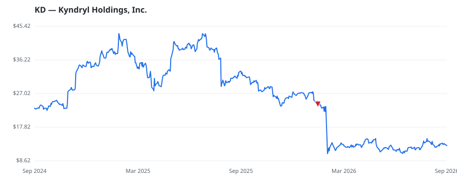

bullish · bearish · n/a — dots: price>SMA10 · SMA10>SMA50 · SMA50>SMA200 · up>down volume (20d)
Software & Services · mid cap

Kyndryl Holdings Inc is a technology services and infrastructure services provider company. It provides advisory, implementation, and managed services across a range of technology domains to help customers manage and modernize enterprise IT environments in support of their business and transformation objectives. The company's reportable segments consist of the following: Principal Markets which represents its operations in operations in Australia / New Zealand, Canada, France, Germany, India, Italy, Spain, Portugal, and the United Kingdom / Ireland, United States, Japan, and Strategic Markets. SERVICES-COMPUTER INTEGRATED SYSTEMS DESIGN · website
| Revenue | $15.1B | Net income | $198.0M |
|---|---|---|---|
| Operating income | $414.0M | Diluted EPS | $0.85 |
| Assets | $12.6B | Equity | $1.3B |
| Fund | Fund alpha vs SPY | Position | % of book |
|---|---|---|---|
| Arnhold LLC | +26% | $22M | 1.5% |
| Knott David M Jr | +17% | $0M | 0.0% |
Hedge data: SEC EDGAR 13F · ranked funds beat SPY in >50% of their quarters · fund alpha = mirror-portfolio return minus SPY.